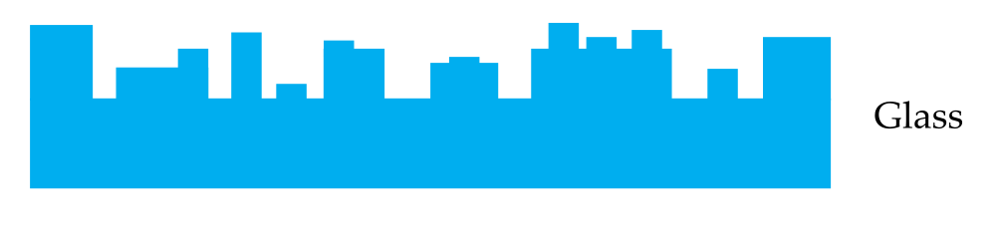
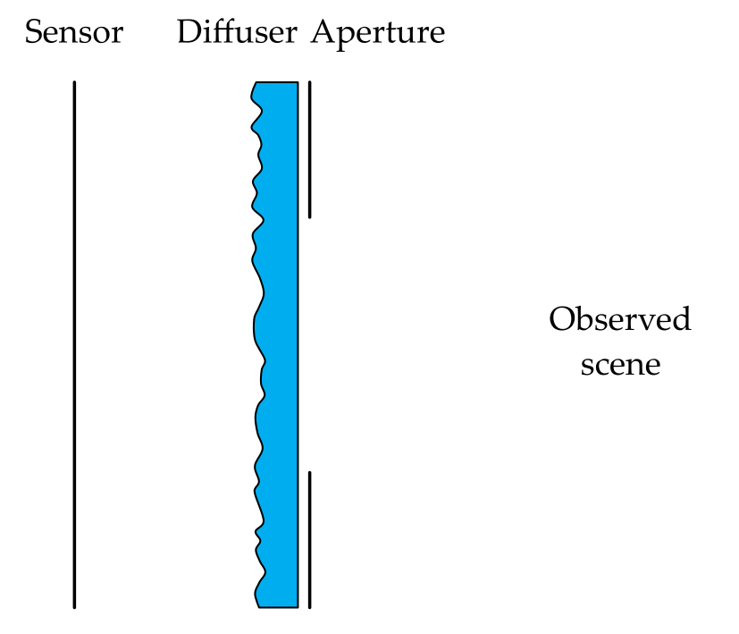
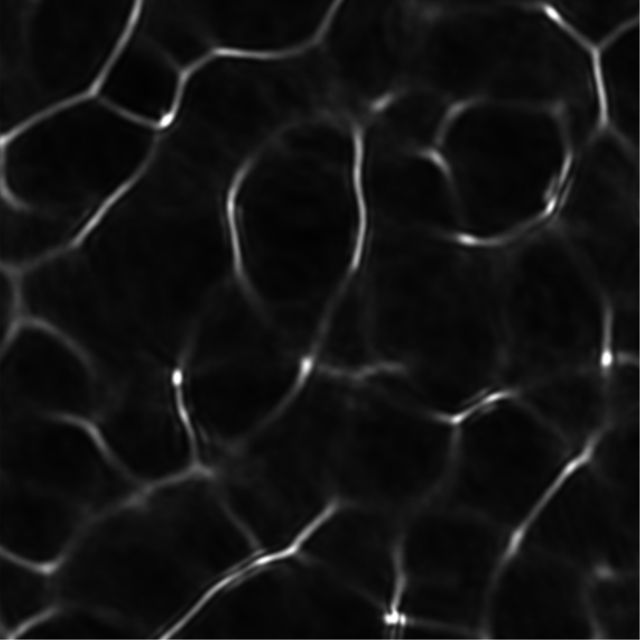
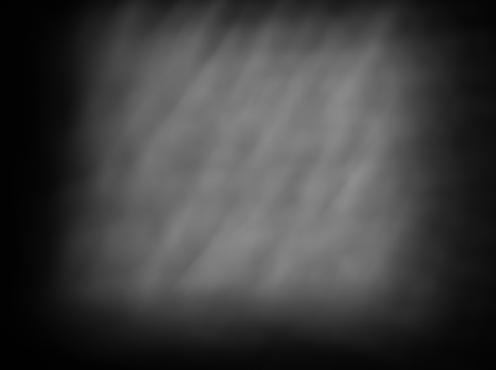

Lensless Imaging
Contents
\(\begin{align} \newcommand{transp}{^\intercal} \newcommand{F}{\mathcal{F}} \newcommand{Fi}{\mathcal{F}^{-1}} \newcommand{inv}{^{-1}} \newcommand{stochvec}[1]{\mathbf{\tilde{#1}}} \newcommand{argmax}[1]{\underset{#1}{\mathrm{arg\, max}}\,} \newcommand{argmin}[1]{\underset{#1}{\mathrm{arg\, min}}\,} \end{align}\)
Computational Imaging
Lensless Imaging#
Content#
Introduction into lensless imaging
Modulating light in a lensless imaging system
Image reconstruction
Example: Diffuser Cam
Introduction into lensless imaging#
As the name suggests, lensless imaging setups capture light on a sensor without focusing it using a lens (system).
As a direct consequence, the image formed on the sensor is usually not interpretable for the naked human eye.
Only with the help of a suitable reconstruction algorithm, the sought image of the observed scene can be obtained.
Lensless imaging systems have some advantages compared to their lens-based counterparts:
Reduced weight and size,
reduced cost,
scalability,
field of view,
visual privacy,
potential applicability to ranges of non-visible wavelengths where it is difficult or impossible to build lenses, e.g., x-rays (provided a suitable sensor).
Disadvantages of lensless imaging systems:
Image quality,
need for computational image reconstruction (also results in increased power consumption, longer processing times, etc.),
reduced amount of collected light.
Modulating light in a lensless imaging system#
Instead of using lenses, lensless imaging systems use other techniques to modulate the light so that each point of the observed scene yields a different system response. This is a necessary condition for the reconstruction methods to be able to recover the sought sharp image of the scene.
The optical effect of relevant modulators is usually modeled via the corresponding point spread function (PSF).
Just using a sensor without any modulator results in a severely ill-posed problem that can barely be solved, as every scene point approximately leads to the same system response.
Typical modulators can be categorized into the following groups:
Amplitude mask modulators (block, attenuate or transmit light with a spatially varying pattern),
phase mask modulators (change the phase of transmitted light with spatially varying phase shifts),
programmable modulators (change amplitude or phase of transmitted light with a spatially varying pattern that can be computationally controlled) and
illumination modulators (controlling, patterning the illumination).
Amplitude modulators#
Amplitude modulators are usually produced by photo-lithographically etching a binary pattern of reflective chrome on a glass substrate or by printing a binary pattern with dark ink on a thin transparent film.
The regions covered with chrome or ink reflect or absorb incident light (i.e., they block it) whereas light is transmitted by the other regions.
Amplitude modulators have their roots in x-ray imaging where it is difficult to construct lenses.
Light modulation by amplitude masks is modeled in two ways, depending on the distance \(d\) between the mask and the sensor:
Small \(d\): The point spread function (PSF) is modeled based on the shadow of the mask cast on the sensor.
Large \(d\): The PSF is modeled based on the diffraction of incident light at the mask.
The so-called Fresnel number \(N_\mathrm{F}\) helps with distinguishing between the two cases and is defined as:
\(\begin{align} N_\mathrm{F} = \frac{a^2}{d\lambda} \,, \end{align}\)
with \(a\) denoting the size of the mask’s smallest open region and \(\lambda\) denoting the shortest wavelength of the involved light.
For \(N_\mathrm{F} >> 1\), the assumptions of geometric optics (i.e., ray optics) hold and the first model can be applied. If \(N_\mathrm{F} <= 1\), diffraction has to be taken into account.
The major disadvantage of amplitude masks is the reduced light efficiency caused by blocking parts of the incident light. This can lead to poor signal-to-noise ratios, especially in low-light applications.
Phase modulators#
Phase modulators change the relative optical path length between different light rays reaching the mask. This introduces changes in the direction of propagation of transmitted light rays, so that distributions of spatially varying light intensities arise behind the mask (so-called caustics).
Hence, phase modulators can yield quite sophisticated intensity patterns varying with respect to the incident light and therefore represent light modulators suitable for lensless imaging.
Furthermore, they do not block incident light what leads to high signal-to-noise ratios.
There are three different main kinds of phase modulators: phase gratings, diffusers and phase masks.
Phase gratings and phase masks and can be produced by photo-lithographically etching structures into glass or by an additively polymerizing photoresist on a transparent substrate. Diffusers can be realized by etching random height structures onto glass or by inexpensively sandblasting a piece of glass.
Phase gratings#
Phase gratings modulate the phase of the incident light by two possible values (e.g., \(\pi\) and \(0\)) depending on the surface height at the respective positions.
Diffusers#
Diffusers typically have surface profiles with continuous random heights and hence produce pseudorandom patterns representing their PSF.
Phase masks#
Phase masks are similar to phase gratings but have many different discrete modulation values (i.e., discrete surface heights). By this means, they can be designed to realize a large range of PSFs at the cost of being more expensive.
Programmable modulators#
By means of so-called spatial light modulators (SLMs), spatial light modulation patterns can be realized which can be computationally controlled.
Liquid crystal displays (LCDs)#
LCDs represent a cheap form of a programmable transmissive modulator.
Typical LCDs consist of
a linear polarizer for the incident light,
a layer of liquid crystals whose orientations can be spatially varied by applying different voltage levels and
a linear polarizer (usually oriented at 90\(^\circ\) with respect to the first polarizer) for the transmitted light.
Depending on the applied voltage, the liquid crystals change the polarization direction of the incident light so that it can (partially) pass the second polarizer.
This allows to spatially control the transmissivity of the LCD and hence represents a computationally controllable amplitude modulator.
By adequately modifying the optical setup of an LCD it is also possible to induce a spatially controllable phase shift to the incident light realizing a computationally controllable phase modulator.
Liquid crystal on silicon (LCoS)#
LCoS SLMs are quite similar to LCDs however they have to be operated in reflection, i.e., the incident light and the transmitted light are on the same side of the device but with inverse direction of propagation.
Digital micromirror device (DMD)#
A DMD can be imagined as a two-dimensional array of small mirrors (lateral lengths of about \(5\) µm) which can be computationally tilted out of the plane of the array.
Typical DMDs support two different tilt angles (i.e., a binary operation mode).
By collecting the reflected light in one of the two possible reflection directions, DMDs can be used to realize a computationally controllable amplitude mask.
Advantages and disadvantage of programmable modulators#
Advantages:
Programmable modulators allow to quickly change between different PSFs,
the ability to realize different modulation patterns and acquire images for each individual pattern can allow to significantly reduce the required spatial resolution of the sensor to achieve a certain reconstruction quality (especially useful for spectral regions where high-resolution sensors are not available or expensive).
Disadvantages:
SLMs are bulky and their integration into optical systems can be complicated,
due to their pixelated design with small structures (near the size of the light’s wavelengths), diffraction effects can occur and notably complicate the reconstruction procedure.
Point spread functions (PSFs)#
All of the mentioned modulators can be modeled via their PSF, i.e., their optical response to a point light source.
Typically, the PSF of a modulator used in lensless imaging is designed to have
an auto-correlation that is close to a Dirac impulse and
a flat magnitude spectrum in the Fourier domain, so that as much spatial frequencies as possible are preserved without significant changes of their contributions to the signal.
Image reconstruction#
The image formed on the sensor of lensless imaging systems typically looks blurred or completely scrambled, i.e., useless for the naked human eye.
In most cases, there is a linear relationship between the observed scene and the resulting measurements on the sensor. Suitable reconstruction algorithms try to invert this mapping in order to obtain a sharp image of the scene based on the blurred and scrambled measurements.
Forward model
For a given lensless imaging system, the relationship between the observed scene and the corresponding measurements can be formalized in a so-called forward model.
The forward model calculates the measurements that can be expected given a certain scene. The model has to achieve a trade-off between physical accuracy and tractability of the reconstruction that is adequate for the targeted application.
Forward model for 2D imaging#
General linear model#
If the scene is assumed to be a two-dimensional plane located at some distance to the imaging system and being oriented perpendicular to the optical axis, the simplest form of an adequate forward model can be expressed via the following general linear model:
\(\begin{align} \mathbf{y} = \mathbf{Hx} \,, \end{align}\)
with the intensities \(\mathbf{x}\) emerging from every sampled scene point, the measurement matrix \(\mathbf{H}\) and the resulting measurements \(\mathbf{y}\).
This model can be interpreted as if every column \(\mathbf{H}[i]\) of \(\mathbf{H}\) stores the sensor image that is associated with the corresponding scene point (i.e., element \(x_i\) of \(\mathbf{x}\)). The value of \(x_i\) (i.e., the reflected intensity of that scene point) then scales \(\mathbf{H}[i]\) before the images corresponding to all captured scene points are additively superposed and yield the measurement \(\mathbf{y}\).
Unfortunately, using this simple model is usually computationally intractable.
To reconstruct a one megapixel image for a one megapixel sensor the matrix \(\mathbf{H}\) would have \(10^6 \cdot 10^6 = 10^{12}\) elements and hence \(10^{12}\) multiplications would have to be carried out for every evaluation of the forward model.
There are two common approaches for alternative models that reduce the computational complexity, convolutional models and separability models.
Convolutional model#
The general linear model can be approximated as a linear shift-invariant system via a convolution of the scene intensities \(x(m,n)\) with the PSF \(h(m,n)\), i.e.,
\(\begin{align} y = x * h \,, \end{align}\)
when the following conditions hold:
Narrow field of view,
sufficient distance between mask and sensor,
far-field approximation.
This formulation has several advantages:
Instead of storing \(\mathbf{H}\), only the 2D convolution kernel \(h\) has to be stored,
model evaluation can be efficiently performed in the Fourier domain.
However, when the mentioned conditions are violated, the assumed shift-invariance breaks down and the convolutional model does no longer yield good approximations.
One possible mitigation to this problem is to use different convolution kernels depending on the lateral pixel position on the sensor (so-called local convolutional models).
Separability model#
Another way to reduce the complexity of the general model is to use modulation masks with a spatial pattern that is separable, i.e., that can be represented as the outer product of two vectors \(\Phi_\mathrm{L}, \Phi_\mathrm{R}\).
The image formation is then described by:
\(\begin{align} \mathbf{y} = \Phi_\mathrm{L}\Phi_\mathrm{R}\transp \mathbf{x} \end{align}\)
Forward model for 3D-imaging#
The 2D forward model can easily extended to the case of 3D-imaging since
the relations between scene intensities and sensor measurements are depth-dependent and
the intensity distributions from different depths are additively superposed on the sensor.
Hence, all previously described approaches can be extended to 3D by simply additively iterating over all discrete depths \(z\) of interest. This leads to the following expressions for the 3D case:
General linear model for 3D:#
\(\begin{align} \mathbf{y} = \sum\limits_z \mathbf{H}_z \mathbf{x}_z \,. \end{align}\)
Convolutional model for 3D:#
\(\begin{align} y = \sum\limits_z x_z * h_z \,. \end{align}\)
Separability model for 3D:#
\(\begin{align} \mathbf{y} = \sum\limits_z \Phi_{\mathrm{L},z}\Phi_{\mathrm{R},z}\transp \mathbf{x}_z \,. \end{align}\)
Calibration#
In order to evaluate the forward model, the actual parameters, i.e., the matrix \(\mathbf{H}\), the kernel \(h\) or \(\Phi_\mathrm{L}, \Phi_\mathrm{R}\) have to be determined.
There are two possible ways to determine these parameters:
Model-based calibration
The optical system design is known due to the design process and the model parameters are simulated via appropriate wavefront propagation models or raytracing methods.
Advantage: No measurements have to be acquired.
Disadvantage: Differences between the simulated optical system and the actual physical system lead to calibration and reconstruction errors.
Experimental calibration
The parameters can also be determined experimentally by acquiring images of a suitable scene. The simplest approach is to acquire measurements of a point source in order to estimate the PSF.
Calibration of the general linear model#
The general linear model assumes a different system response for each individual scene sampling position. Hence, a calibration measurement has to be acquired for a point source that is positioned at every scene sampling position, what is usually intractable.
Only if a model-based calibration is possible, calibration of the linear model might be realized in reasonable time.
Calibration of the convolutional model#
Since the convolutional model assumes a linear shift-invariant system, it is sufficient to estimate (i.e., acquire) one PSF for every discrete scene depth \(z\) of interest (i.e., only one for 2D imaging applications) or to computationally scale one PSF with respect to \(z\).
If the PSF is not constant across the field of view, multiple PSFs can be acquired in coarse grid.
Calibration of the separability model#
Calibration of the separability model is slightly more challenging than for the convolutional model. Typically, the vectors \(\Phi_\mathrm{L}, \Phi_\mathrm{R}\) can be estimated out of measurements of line images (i.e., bright rows or columns in the scene).
Performing the reconstruction#
In order to perform the reconstruction of the sought scene intensities \(\mathbf{x}\) for an actual lensless imaging system based on an observation \(\mathbf{y}\),
the system’s forward model has to be correctly formulated and
the model has to be calibrated,
so that the forward model can be evaluated for an estimate \(\hat{\mathbf{x}}\) of the scene intensities.
Possible approaches to reconstruct \(\mathbf{x}\) are deconvolution methods and convex optimization algorithms as discussed in the previous chapter.
Also data-driven approaches (i.e., involving neural networks) can be employed to perform the reconstruction or to visually enhance the reconstruction results.
Example: Diffuser Cam#
We will now study an example lensless imaging system where a diffuser is used as a modulator and 3D images of the observed scene are reconstructed by means of the ADMM algorithm.
The following content is based on the publication DiffuserCam: lensless single-exposure 3D imaging by Nick Antipa et al..
The optical setup of the Diffuser Cam is shown in the following figure:
The image resulting from illumination with a single point source, the PSF, looks like this:
The visible structures are caused by the diffuser that focuses the incident light in a pseudo-random pattern, a so-called caustic.
Forward model#
When the single illuminating point source is moved laterally, the PSF is also shifted laterally on the sensor. When the point source is moved axially, the PSF is scaled (getting larger for a decreasing distance to the modulator and larger for increasing distance).
The forward model can be represented by a linear model
\(\begin{align} \mathbf{b} = \mathbf{Hv} \,, \end{align}\)
where the observation is the result of an additive superposition of all PSFs \(\mathbf{H}\) for all possible scene point locations scaled by the corresponding light intensities \(\mathbf{v}\).
As mentioned before, this approach is intractable due to the high number of elements of \(\mathbf{H}\).
Instead, a convolutional model is used as the forward model:
\(\begin{align} b = \mathcal{C}\left\{ \sum\limits_z v_z * h_z \right\} \,, \end{align}\)
with \(v_z\) denoting the intensities of scene points at depth \(z\), \(h_z\) representing the PSF at depth \(z\) and \(\mathcal{C}\) denoting a linear operator that crops the image to actual sensor size.
Image reconstruction#
We will start with a simple gradient descent-based reconstruction approach and then move on to an ADMM-based reconstruction.
Gradient descent-based reconstruction#
For the first approach, we will not use any prior and just try to find an estimate \(\hat{\mathbf{v}}\) that optimizes the data fidelity term:
\(\begin{align} \hat{\mathbf{v}} &= \argmin{\mathbf{v}} \frac{1}{2} \left\| \underbrace{\mathbf{CH}}_{=:\mathbf{A}}\mathbf{v} - \mathbf{b} \right\|^2_2 \\ &= \argmin{\mathbf{v}} \underbrace{\frac{1}{2} \left\| \mathbf{A}\mathbf{v} - \mathbf{b} \right\|^2_2}_{=:g(\mathbf{v})} \,, \end{align}\)
with \(\mathbf{H}\) representing a matrix encoding a cyclic convolution with the PSF \(h\), \(\mathbf{C}\) denoting a matrix encoding the crop operator \(\mathcal{C}\) and \(\mathbf{A} := \mathbf{CH}\).
To perform gradient descent, we have to derive the gradient \(\nabla_\mathbf{v} g(\mathbf{v})\) of \(g\) with respect to \(\mathbf{v}\):
\(\begin{align} \nabla_\mathbf{v} g(\mathbf{v}) = \nabla_\mathbf{v} \frac{1}{2} \left\| \mathbf{A}\mathbf{v} - \mathbf{b} \right\|^2_2 = \mathbf{A}\transp (\mathbf{Av}-\mathbf{b}) = \mathbf{H}\transp \mathbf{C}\transp \left( \mathbf{CHv} - \mathbf{b} \right) \,. \end{align}\)
The transpose \(\mathbf{C}\transp\) of the crop operation corresponds to zero padding.
As the reconstruction should only have positive pixel values, we replace any negative values of \(\hat{\mathbf{v}}\) with 0 during the gradient descent iterations. This is also called projected gradient descent since the calculated estimations are projected on the set of images with only positive pixel values.
Example reconstruction#
The following image represents a raw image captured with a Diffuser Cam:
Based on this input, the gradient descent-based reconstruction yields the following results:
interact(lambda i: showFig('figures/7/diffuser_cam_grad_recon_',i,'.svg',800,50), i=widgets.IntSlider(min=(min_i:=0),max=(max_i:=9), step=1, value=(max_i if book else min_i)))
<function __main__.<lambda>(i)>
ADMM-based reconstruction#
By using the ADMM framework, the reconstruction quality can be increased via additional constraints and the reconstruction speed will increase due to the faster convergence of ADMM.
In the following, we will iteratively extend the original optimization problem by several constraints.
First, the composition of the matrix \(\mathbf{A} = \mathbf{CH}\) will be decomposed into two steps via the slack variable \(\mathbf{q}\):
\(\begin{align} \hat{\mathbf{v}} = &\argmin{\mathbf{q}} \frac{1}{2} \left\| \mathbf{C} \mathbf{q} - \mathbf{b} \right\| ^2_2 \\ &\text{subject to}\quad \mathbf{q} = \mathbf{Hv} \,. \end{align}\)
Next, we want to enforce positive values of the reconstruction via the slack variable \(\mathbf{w}\):
\(\begin{align} \hat{\mathbf{v}} = &\argmin{\mathbf{q}, \mathbf{w}} \frac{1}{2} \left\| \mathbf{C} \mathbf{q} - \mathbf{b} \right\| ^2_2 + \mathrm{pos}(\mathbf{w}) \\ &\text{subject to}\quad \mathbf{q} = \mathbf{Hv},\, \mathbf{w}=\mathbf{v} \,, \end{align}\)
with
\(\begin{align} \mathrm{pos}(\mathbf{x})= \begin{cases} +\infty \quad &\text{if } x_i < 0 \text{ for any } i\\ 0 &\text{otherwise.} \end{cases} \end{align}\)
Finally, we want the reconstruction to be sparse by introducing an anisotropic total variation prior \(\Psi\) via the slack variable \(\mathbf{u}\):
\(\begin{align} \hat{\mathbf{v}} = &\argmin{\mathbf{q}, \mathbf{w}, \mathbf{u}} \frac{1}{2} \left\| \mathbf{C} \mathbf{q} - \mathbf{b} \right\| ^2_2 + \mathrm{pos}(\mathbf{w}) + \tau \left\| \mathbf{u} \right\|_1 \\ &\text{subject to}\quad \mathbf{q} = \mathbf{Hv},\, \mathbf{w}=\mathbf{v},\, \mathbf{u} = \Psi \mathbf{v} \,, \end{align}\)
with \(\Psi\) encoding the finite difference operator in \(x\)- and \(y\)-direction as introduced in Chapter 6.
All those constraints can now be combined into one constraint-less optimization problem by means of the standard form augmented Lagrangian:
\(\begin{align} L(\mathbf{\mathbf{u,q,w,v,\tilde{u},\tilde{q},\tilde{w}}}) = &\frac{1}{2} \left\| \mathbf{C} \mathbf{q} - \mathbf{b} \right\| ^2_2 + \mathrm{pos}(\mathbf{w}) + \tau \left\| \mathbf{u} \right\|_1 \\ & + \frac{\mu_1}{2} \left\| \mathbf{Hv} - \mathbf{q} \right\|^2_2 + \tilde{\mathbf{q}} \transp \left( \mathbf{Hv-q} \right) \\ & + \frac{\mu_2}{2}\left\| \Psi \mathbf{v-u} \right\|^2_2 + \mathbf{\tilde{u}} \transp \left( \Psi \mathbf{v-u} \right) \\ & + \frac{\mu_3}{2} \left\| \mathbf{v-w} \right\| ^2_2 + \mathbf{\tilde{w}} \transp \left( \mathbf{v-w} \right) \,, \end{align}\)
with \(\tilde{\mathbf{q}}, \tilde{\mathbf{u}}, \tilde{\mathbf{w}}\) denoting the Lagrange multipliers associated with \(\mathbf{q,u,w}\) and \(\mu_1, \mu_2, \mu_3\) denoting the corresponding weights.
We now have to provide the update rules for all of those seven variables. The solutions are provided in the following and can be derived in the scope of exercise 6.
\(\begin{align} \mathbf{u}_{k+1} &\leftarrow \mathcal{S}_{\tau / \mu_2} \left( \Psi \mathbf{v}_k + \frac{1}{\mu_2}\tilde{\mathbf{u}}_k \right) \,, \\ \mathbf{q}_{k+1} &\leftarrow \left( \mathbf{C}\transp \mathbf{C} + \mu_1 \mathbf{I} \right) ^{-1} \left( \tilde{\mathbf{q}}_k + \mu_1 \mathbf{Hv}_k + \mathbf{C}\transp \mathbf{b} \right) \,, \\ \mathbf{w}_{k+1} &\leftarrow \mathrm{max}\left( \frac{1}{\mu_3}\tilde{\mathbf{w}}_k + \mathbf{v}_k, \mathbf{0} \right) \,, \\ \mathbf{v}_{k+1} &\leftarrow \left( \mu_1 \mathbf{H}\transp \mathbf{H} + \mu_2 \Psi\transp \Psi + \mu_3 \mathbf{I}\right)^{-1} \cdot \\ & \quad\,\,\, \left( \mu_3 \mathbf{w}_{k+1} - \tilde{\mathbf{w}}_k \right) + \Psi\transp \left( \mu_2 \mathbf{u}_{k+1} - \tilde{\mathbf{u}}_k \right) + \mathbf{H}\transp \left( \mu_1 \mathbf{q}_{k+1} - \tilde{\mathbf{q}}_k \right) \,, \\ \tilde{\mathbf{q}}_{k+1} &\leftarrow \tilde{\mathbf{q}}_k + \mu_1 \left( \mathbf{Hv}_{k+1} - \mathbf{q}_{k+1} \right) \,, \\ \tilde{\mathbf{u}}_{k+1} &\leftarrow \tilde{\mathbf{u}}_k + \mu_2 \left( \Psi \mathbf{v}_{k+1} - \mathbf{u}_{k+1} \right) \,, \\ \tilde{\mathbf{w}}_{k+1} &\leftarrow \tilde{\mathbf{w}}_k + \mu_3 \left( \mathbf{v}_{k+1} - \mathbf{w}_{k+1} \right) \,, \end{align}\)
with \(\mathcal{S}\) denoting the element-wise soft thresholding operator, \(\mathbf{I}\) denoting the identity matrix and \(\mathrm{max}(\mathbf{a,b})\) denoting the element-wise maximum of \(\mathbf{a}\) and \(\mathbf{b}\).
Example reconstruction#
The ADMM-based reconstruction yields the following results:
interact(lambda i: showFig('figures/7/diffuser_cam_ADMM_recon_',i,'.svg',800,50), i=widgets.IntSlider(min=(min_i:=0),max=(max_i:=9), step=1, value=(max_i if book else min_i)))
<function __main__.<lambda>(i)>